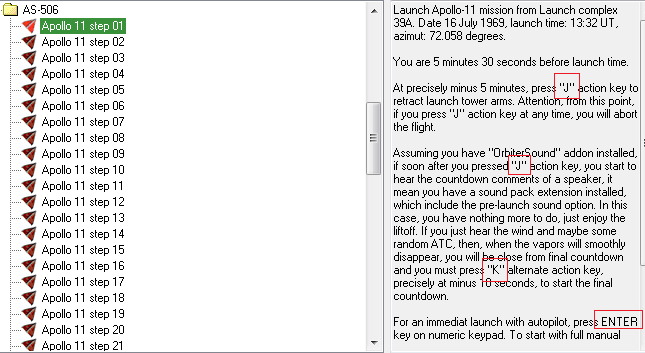

AMSOの基本操作（キー操作一覧）
AMSOでは、特定のキーを押すことで実機の挙動を再現したオートパイロットを実行できます。
キーボードJ、K、M、Enter、矢印キーなどを押すだけで宇宙船を動かすことができます。※
※ドッキングは手動、TLIなどではIMFDやLTMFDを使う必要があります
シナリオの説明文に、どのキーを押せばいいのか書かれているので参考にしてください。

キー操作一覧
| J |
|
| K |
|
| M |
|
| Enter |
※テンキー右下のEnterのみ |
| Ctrl+J |
|
| Ctrl+K |
|
| Shift+Ctrl+I |
|
| Ctrl+L |
|
| Shift+L |
|
| Shift+Ctrl+L |
|
| テンキー0～9 |
|
| Ctrl + テンキー5 |
※接近する速度は変化しません。 |
| Shift+Ctrl + テンキー5 |
|
| Tab |
|
サターンロケット・月着陸船の打ち上げ
サターンロケットの打ち上げの場合、打ち上げの5分前※にJを押す。
※ゲーム開始から30秒後
月着陸船の打ち上げの場合は、以下の順番で操作する。
J→K→矢印キー←or→でEngage ASCENT countdownを選択→矢印キー↑
カウントダウンが開始されるので、そのまま待つ。
オートパイロットの実行手順
最初にKを押してメニューを呼び出す（画面左下）。
矢印キー←→で選択。
矢印キー↑でオートパイロットを実行する。
音声の自動再生
いくつかの音声は特定の時刻になると再生されるようになっています。
Ctrl+Kによってこれらの音声が再生されないようにすることができます。
月着陸など、特定の行動に伴う音声は無効化されません。
また、このキー操作によって月の石を集めるミッションを省略できます。（石が消えます）